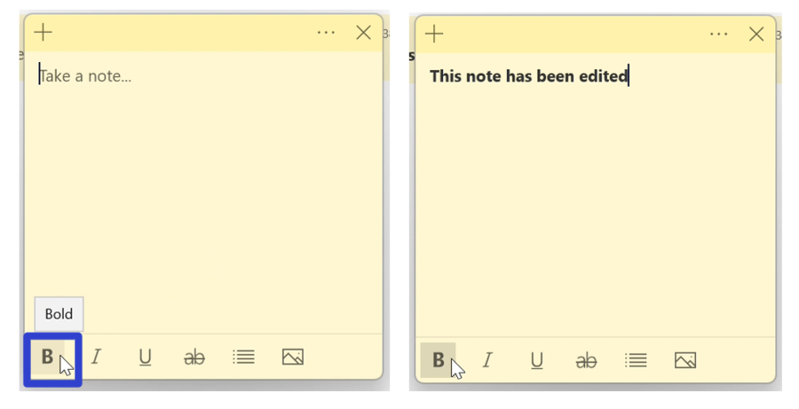
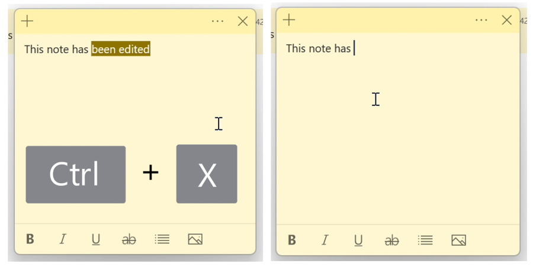

How to Format Text in the Microsoft Sticky Notes App (Windows 11)
This tutorial covers:
How to Format Text:
How to Copy Text:
How to Cut Text:
How to Paste Text:
No time to scroll down? Click through these tutorial slides:
Follow along with a tutorial video:
How to Format Text With Click
- Method 1: First edit a sticky note and select any text. At the bottom of the sticky note, click one of the formatting buttons to add or remove that formatting.

- Method 2: Open a sticky note, click one of the formatting buttons at the bottom, and type any text. The Sticky Notes app automatically applies that formatting to the text. 
How to Format Text With Keyboard Shortcut
- Step 1: First edit a sticky note and select any text. On the keyboard, press:
- Ctrl + B to add or remove bold formatting.
- Ctrl + I to add or remove italic formatting.
- Ctrl + U to add or remove underlined formatting.
- Ctrl + T to add or remove strikethrough formatting.
- Ctrl + Shift + L to add or remove bullet point formatting.

How to Copy Text With Right Click
- Step 1: Edit a sticky note and select any text. Right click anywhere in the sticky note.

- Step 2: In the menu that opens, click “Copy”.

How to Copy Text With Keyboard Shortcut
- Step 1: First edit a sticky note and select any text. On the keyboard press Ctrl + C.

How to Cut Text With Right Click
- Step 1: Edit a sticky note and select any text. Right click anywhere in the sticky note.

- Step 2: In the menu that opens, click “Cut”. The Sticky Notes app copies and removes the text.

How to Cut Text With Keyboard Shortcut
- Step 1: First edit a sticky note and select any text. On the keyboard press Ctrl + X. 
How to Paste Text With Right Click
- Step 1: Copy or cut text in a sticky note. Right click anywhere in the sticky note.

- Step 2: In the menu that opens, click “Paste”.

How to Paste Text With Keyboard Shortcut
Save these instructions for later with this free tutorial PDF.